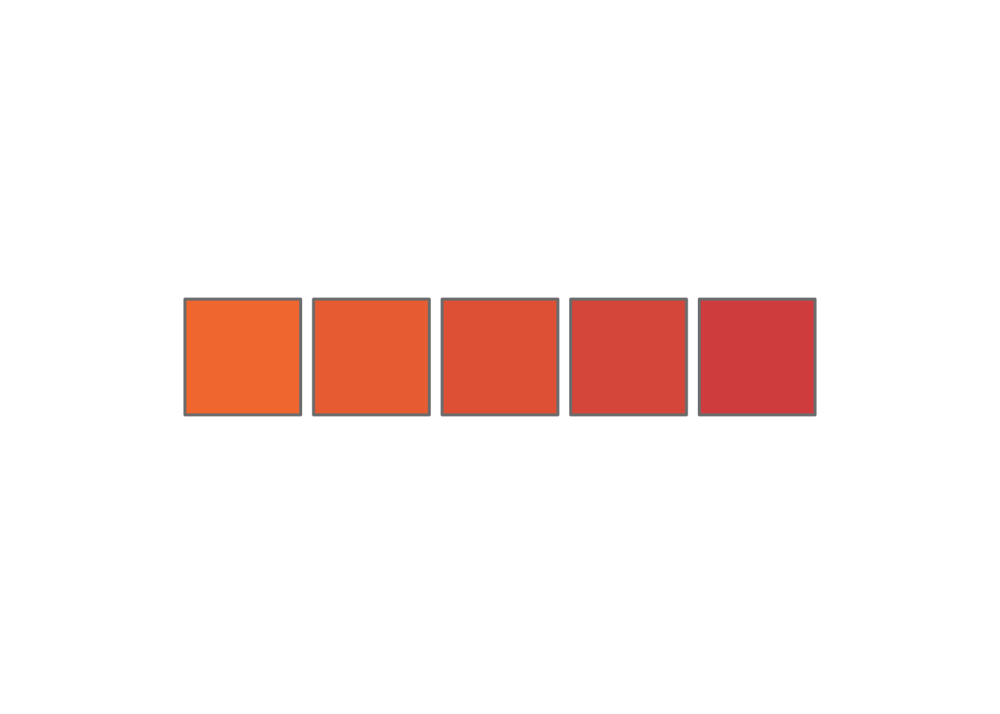

imageURL_invert = FileAttachment("/data/invert 2.png").url()
imageURL_peri = FileAttachment("/data/periphyton.png").url()
imageURL_invert_div = FileAttachment("/data/invert_div.png").url()
imageURL_par_len = FileAttachment("/data/par_len.png").url()Tutorial
How to customize the ‘Exploits_predictions’ GitPage
Content
This presentation will walk through using and customizing the “exploits_predictions” GitPage
- Using Github
- Parts of a Quarto Webpage
- The website itself!
- Home tab
- Slider tab
- Map tab
- Getting it online
GitHub basics
Somewhere to store, share, collaborate on code/software
Repositories
This is where you store all your code/data/versions etc
All of the information for this website is at my repository: https://github.com/emmwilson/exploits_predictions 
Your own version
I don’t want you changing this version of the website
So let’s make you your own!
To do this we:
fork the repository to your Git account
clone the forked repository to your computer
fork
In the top right corner of emmwilson/exploits_predictions click fork 
Then give your repository its own name and description 
Clone
Now to get the repository onto your computer to work on
We will do this using RStudio
- In GitHub (in your own version of the repository) copy the url

Clone
- Create a new project
- Select Version control, using GIT


Clone
- Create a new project
Paste in the URL
Give the repository a folder name on your computer,
and choose where to store it

Git in RStudio
Now as you work on the project you can keep track of your changes using GitHub
This is done by:
Commit: creates a snapshot of the repository with the specified chanegs
Push: send the changes to the repository online
Resources
Skipped over installing git:
https://github.com/git-guides/install-git
Other helpful places to look for instructions
https://docs.github.com/en/get-started/start-your-journey/about-github-and-git
Parts of a Quarto Webpage
.qmd files
Each of these files specifies a different page on the website.
For example:


_quarto.yml
Can specify:
- How the page gets rendered
- Which .qmd files get included as pages
- Universal themes

others
There are also other files that are important to building a quarto webpage:
- styles.css
- _extensions folder
- _site folder
- etc…
. . .
But we don’t need to alter any of them so we will skip over
The website itself
https://emmwilson.github.io/exploits_predictions/
These next few slides go over which parts of the different qmd files you will need to customize to get this website to show your results
- index.qmd
- Sliders.qmd
- Exploits_map.qmd
Index
Simply type in the information on each line.

- about… :Describe the results that will show on each tab
- Affiliated manuscript: if applicable fill this out, if not you can delete that line
- Authors, Affiliations, Funding: add applicable information
Produces
Sliders
Creates a page where you can select predictor variable values and see predicted levels of response variables in a bar graph
There are several parts you will need to customize:
- png paths
- specify paths(lines: 38 - 41)
- create table with paths (lines: 81 - 84)
- set up sliders (lines: 46 - 59)
- create table with predictions (lines: 67 - 78)
png paths
For the response variables
- save pngs to the “data” folder

- add a line for your specific image
(or change out for one you aren’t using; lines: 38 - 41)
png paths
For the response variables
- create table with paths (lines 81 - 84)
// create a table that stores the image paths
images = aq.table({
'response_type': ["Invertebrate biomass ()", "Invertebrate diversity", "Par length (cm)", "Periphyton biomass ()"], // ordered alphabetically
'image_path': [imageURL_invert, imageURL_invert_div, imageURL_par_len, imageURL_peri] //order these to match alphabetically ordered response variables (response_type)
})set up sliders
For the predictor variables
Add in name of variable, range, starting value, step, and label (lines: 46 - 59)
viewof wetted = Inputs.range(
[0, 10],
{value: 5, step: 0.1, label: "Wetted width (units):"}
);
// example: substrate size
viewof substrate = Inputs.range(
[0, 10],
{value: 5, step: 0.1, label: "Substrate size (units):"}
);
// example: percent lakes
viewof percent = Inputs.range(
[0, 20],
{value: 10, step: 0.1, label: "Percent lake (units):"}
);create table with predictions
Uses the inputs from sliders to calculate the predicted response variables (lines: 67 - 78):
- Need to make sure predictor variables match sliders
function myFunction(wetted, substrate, percent) {
return aq.table({
'wetted': [wetted, wetted, wetted, wetted],
'substrate': [substrate, substrate, substrate, substrate],
'percent': [percent, percent, percent, percent],
'response_type': ["Invertebrate biomass (units)", "Invertebrate diversity", "Par length (cm)", "Periphyton biomass (units)"], // ordered alphabetically
'response_predict': [0.83-0.095*wetted+0.03*substrate, 0.44+0.026*wetted+0.32*percent, 0.7+0.0016*substrate, 0.1+0.06*wetted]
})
}
predictions_ps = myFunction(wetted, substrate, percent)create table with predictions
Uses the inputs from sliders to calculate the predicted response variables:
- Give response variables names (same as those for png files)
function myFunction(wetted, substrate, percent) {
return aq.table({
'wetted': [wetted, wetted, wetted, wetted],
'substrate': [substrate, substrate, substrate, substrate],
'percent': [percent, percent, percent, percent],
'response_type': ["Invertebrate biomass (units)", "Invertebrate diversity", "Par length (cm)", "Periphyton biomass (units)"], // ordered alphabetically
'response_predict': [0.83-0.095*wetted+0.03*substrate, 0.44+0.026*wetted+0.32*percent, 0.7+0.0016*substrate, 0.1+0.06*wetted]
})
}
predictions_ps = myFunction(wetted, substrate, percent)create table with predictions
Uses the inputs from sliders to calculate the predicted resonse variables:
- Specify calculations of response variables from predictor variables
function myFunction(wetted, substrate, percent) {
return aq.table({
'wetted': [wetted, wetted, wetted, wetted],
'substrate': [substrate, substrate, substrate, substrate],
'percent': [percent, percent, percent, percent],
'response_type': ["Invertebrate biomass (units)", "Invertebrate diversity", "Par length (cm)", "Periphyton biomass (units)"], // ordered alphabetically
'response_predict': [0.83-0.095*wetted+0.03*substrate, 0.44+0.026*wetted+0.32*percent, 0.7+0.0016*substrate, 0.1+0.06*wetted]
})
}
predictions_ps = myFunction(wetted, substrate, percent)Produces
Map
Creates a map of the Exploits Watershed with predicted levels of response variables for each reach that has been sampled.
There are several parts you will need to customize:
- importing layers (lines: 38 - 50)
- create predictions (lines: 60-64)
- colour palettes (lines: 70-72)
- popups (lines: 80-86)
- map (lines: 92 - 138 **but only lines that need changing are 117-130)
import spatial data
(lines: 38 - 50)
#import layers
## river extent
exploits_drainage <- vect("data/spatial data/exploits_watershed.shp") |>
project("EPSG:4326 - WGS 84")
## all rivers
exploits_river <- vect("data/spatial data/OrderSlopeSegJan22.shp") |>
project("EPSG:4326 - WGS 84")
## lakes
lakes <- vect("data/spatial data/Exploits_lakes.shp") |>
project("EPSG:4326 - WGS 84")
## data from river reaches sampled
field_reaches <- vect("data/spatial data/exploits_reaches_with_sites.shp") |>
project("EPSG:4326 - WGS 84")create predictions
based on data from sampled reaches (lines: 60-64)
# use river reach data to predict outcomes
predictions_reaches <- field_reaches
## predict responses based on data from field at each reach
predictions_reaches$invert <- 0.43-0.015*predictions_reaches$avg_wet_wi+0.03*predictions_reaches$D50_pred ## input your own formulas here
predictions_reaches$embed <- 0.43-0.015*predictions_reaches$avg_wet_wi+0.03*predictions_reaches$D50_predColour palettes
Add palettes as you add response variables (lines: 70-72)
#colour palettes for predictions
invert.pal <- colorNumeric(c("#f47c3c", "#d9534f"), domain = predictions_reaches$invert, na.color = "transparent")
embed.pal <- colorNumeric(c("#e9c602", "#93c54b"), domain = predictions_reaches$embed, na.color = "transparent")
pop ups
Lists out the data that will show up when you click on a reach (lines: 80-86)
label_text <- glue("<b><u>{predictions_reaches$stream_nam}</u></b> <br/>", # stream name
"<b>Embededness: </b> {predictions_reaches$embed}<br/>", # prediction example: embedness
"<b>Invertegrate biomass: </b> {predictions_reaches$invert}<br/>", # prediction example: invert biomass
"<b>Wetted width: </b> {predictions_reaches$avg_wet_wi}<br/>", # predictor variable example: wetted width
"<b>Catchment: </b> {predictions_reaches$catchment_}<br/>", # predictor variable example: catchement
"<b>Substrate size: </b> {predictions_reaches$D50_pred}<br/>") |> # predictor variable example: substrateLooks like

Code for the map
(lines: 92 - 138 **but only lines that need changing are 117-130)
exploits_map <- leaflet(width = 1900, height = 1600) |>
addProviderTiles('Esri.WorldImagery') |> # adds base map
# open map to this screen
setView(-56.65499, 48.70449, zoom = 9) |>
#can recenter to that location by clicking button
addHomeButton(ext = c(-58.9311,47.9605, -53.830,49.3532), position = "topleft", group = "Recenter") |>
# create layers to add vectors to
addMapPane("drainage", zIndex = 410) |>
addMapPane("river", zIndex = 415) |>
addMapPane("reaches", zIndex = 420) |>
addMapPane("lakes", zIndex = 425) |>
# add polygons and lines
## exploits drainage area
addPolygons(data = exploits_drainage, color = "#1f78b4", weight = 1.25, fillColor = "#1f78b4", fillOpacity = 0.2, options = pathOptions(pane = "drainage")) |>
## rivers of the exploits
addPolylines(data = exploits_river, color = "#1f78b4", weight = 1, options = pathOptions(pane = "river"), group = "exploits") |>
## lakes of the exploits
addPolygons(data = lakes, color = "#1f78b4", stroke = FALSE, fillOpacity = 1, options = pathOptions(pane = "lakes"), group = "exploits") |>
## predictions of invertebrate biomass
addPolylines(data = predictions_reaches, color = ~invert.pal(predictions_reaches$invert), weight = 2, options = pathOptions(pane = "reaches"), group = "Invertebrate Biomass", popup = ~label_text) |>
addLegend(pal = invert.pal, values = predictions_reaches$invert,
title = "Invertebrate Biomass",
group = "Invertebrate Biomass", opacity = 1) |>
## predictions of embededness
addPolylines(data = predictions_reaches, color = ~embed.pal(predictions_reaches$embed), weight = 2, options = pathOptions(pane = "reaches"), group = "Embededness", popup = ~label_text) |>
addLegend(pal = embed.pal, values = predictions_reaches$embed,
title = "Embededness",
group = "Embededness", opacity = 1) |>
# ability to choose which predictions to see
addLayersControl(overlayGroups = c("Invertebrate Biomass", "Embededness"), position = "topleft", options = layersControlOptions(collapsed = F)) |>
htmlwidgets::onRender("
function() {
$('.leaflet-control-layers-overlays').prepend('<label style=\"text-align:left\">Available layers</label>');
}
") |>
addScaleBar(position = "bottomright") |>
addLogo(arrow)Produces
Getting the site online
We use GitPages to host the interactive webpage
A few things you need first
In terminal run this line of code:
- quarto add r-wasm/quarto-live
(there should be a terminal tab beside the RStudio console tab)
Source folder
GitPages needs to know where to look to render the webpage. In our case we are using the docs folder.
Go to GitHub -> Your repository -> Settings (along the top)-> Pages (along left)
Make sure your deployment is configured like so:

Render locally
To get the docs folder ready we need to render everything locally
To do that click  along the top of RStudio for each qmd file
along the top of RStudio for each qmd file
This should open up each page in the browser
And will create the necessary files in the docs folder
Commit and Push
Now we need to commit and push all the changes we’ve made
- In RStudio: go to the Git tab (one along top or one by the environment tab)
- Select

Commit and Push
- Commit:
- Select the files and folders that show up in the top left console

- Add a commit message and select “Commit”
** Important ** There is a limit to how much you can commit and push at one time!
If you are adding any spatial data, do a seperate commit and push for that file
And be conservative about how much you commit at one time
- After it has finished with the commit click Push

pages build and deployment
GitHub will now build and deploy your webpage!
Once it has finished you can go to:
Settings -> Pages
and you should have the option to visit the site 
Congrats! You’ve customized the webpage!
extra resources
Quarto:
basics of quarto pages: https://quarto.org/docs/websites/ info on using quarto and GitPages: https://quarto.org/docs/publishing/github-pages.html
for sliders
using observable js with quarto: https://quarto.org/docs/dashboards/interactivity/observable.html all the options available with Plot: https://observablehq.com/plot/what-is-plot going from ggplot to Plot: https://observablehq.com/@observablehq/plot-from-ggplot2
using leaflet
how to use leaflet to make maps in R: https://rstudio.github.io/leaflet/articles/leaflet.html